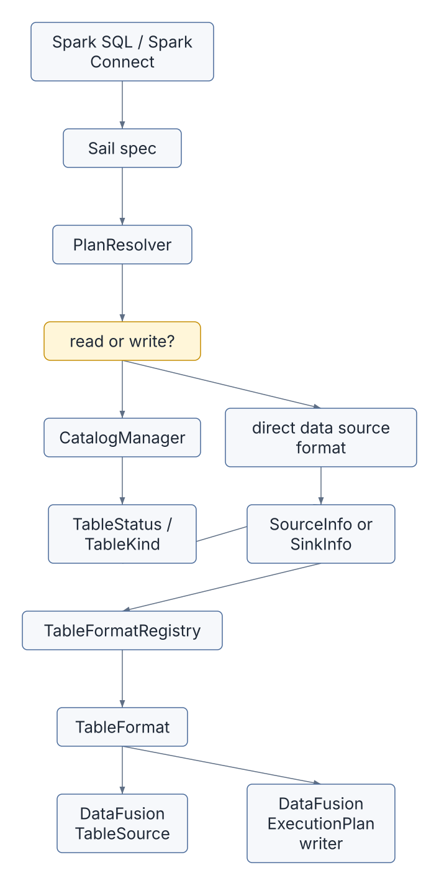
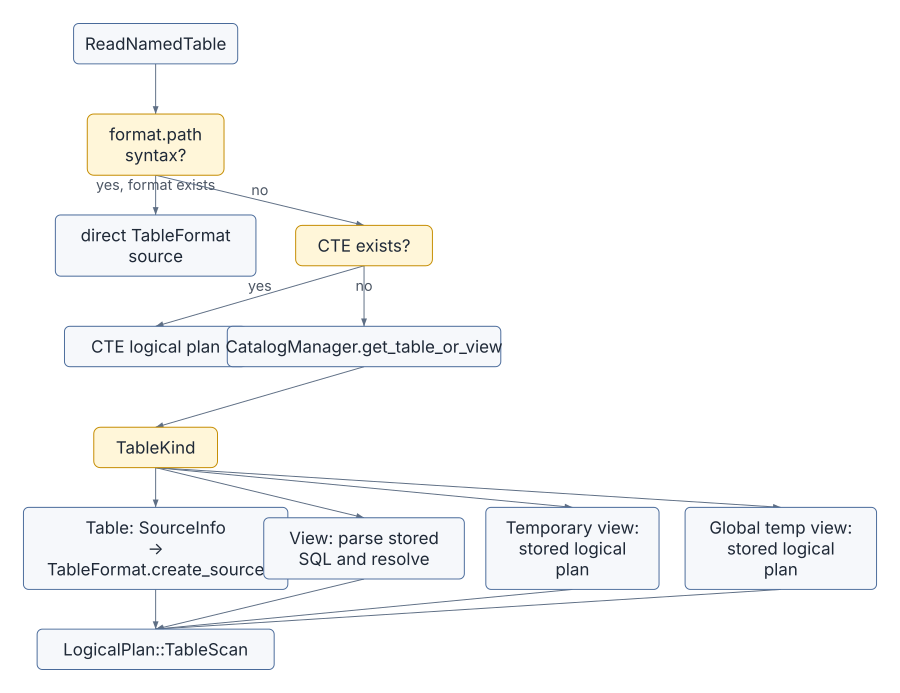
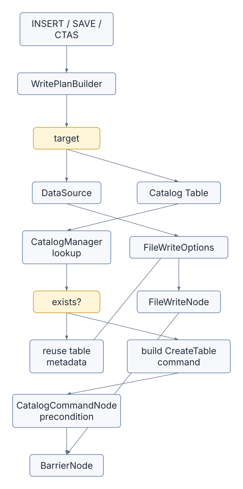
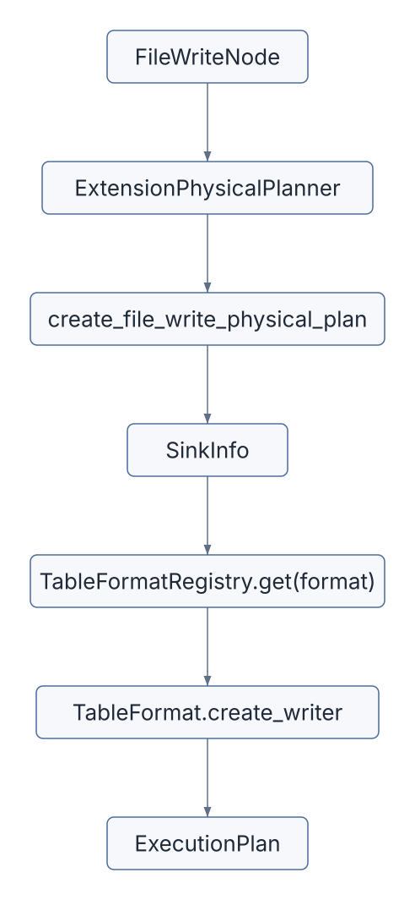
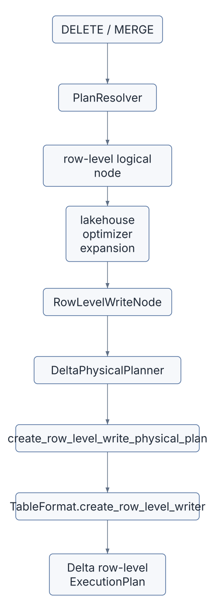

So far, the book has followed queries from Spark Connect through Sail specs, DataFusion logical plans, distributed physical plans, tasks, streams, shuffles, and functions. This chapter turns toward storage.
Storage in Sail is not a single subsystem. It is a set of contracts:
That separation is one of the most important architectural lessons in Sail. It lets Spark-compatible commands talk to Hive Metastore, Glue, Unity, Iceberg REST, OneLake, memory catalogs, ordinary files, Delta Lake, Iceberg tables, and Python data sources without forcing all of those concepts into one giant table abstraction.
The short version is:
Spark table name or data source
-> CatalogManager or direct format lookup
-> TableStatus / SourceInfo / SinkInfo
-> TableFormatRegistry
-> DataFusion TableSource or ExecutionPlanThe long version is this chapter.
The main files for this chapter are:
| Concern | File |
|---|---|
| Catalog manager | crates/sail-catalog/src/manager/mod.rs |
| Catalog table/view status | crates/sail-common-datafusion/src/catalog/status.rs |
| Catalog command enum | crates/sail-catalog/src/command.rs |
| Catalog command physical exec | crates/sail-physical-plan/src/catalog_command.rs |
| Session catalog construction | crates/sail-session/src/catalog.rs |
| Table format trait and registry | crates/sail-common-datafusion/src/datasource.rs |
| Session table format registration | crates/sail-session/src/formats.rs |
| Named table and data source reads | crates/sail-plan/src/resolver/query/read.rs |
| Write command resolution | crates/sail-plan/src/resolver/command/write.rs |
| Logical file write node | crates/sail-logical-plan/src/file_write.rs |
| Physical file write planning | crates/sail-physical-plan/src/file_write.rs |
| Logical/physical delete planning | crates/sail-logical-plan/src/file_delete.rs,
crates/sail-physical-plan/src/file_delete.rs |
| Generic listing table formats | crates/sail-data-source/src/listing/source.rs |
| Parquet format example | crates/sail-data-source/src/formats/parquet/mod.rs |
| Delta table format | crates/sail-delta-lake/src/table_format.rs |
| Iceberg table format | crates/sail-iceberg/src/table_format.rs |
| Lakehouse extension planners | crates/sail-session/src/planner.rs,
crates/sail-delta-lake/,
crates/sail-iceberg/ |
| Python data source table format | crates/sail-data-source/src/formats/python/table_format.rs |
Sail has to preserve Spark behavior while using DataFusion as the execution kernel. That means it cannot simply expose DataFusion’s catalog model directly to clients. Spark has its own rules for:
USING parquet, USING delta, and
spark.read.format(...),Sail translates that world into a smaller set of internal contracts.

The table format layer is where Arrow and DataFusion become visible
again. Reads produce a TableSource, which DataFusion can
scan. Writes produce an ExecutionPlan, which DataFusion can
run.
The CatalogManager in
crates/sail-catalog/src/manager/mod.rs is a session
extension. It owns:
Its most important job is name resolution. A query like this:
SELECT * FROM sales.ordersdoes not say whether sales is a catalog or a database.
Sail follows Spark-style resolution:
[name]
-> default catalog + default database + table
[prefix..., table]
-> if prefix starts with a known catalog, use that catalog
-> otherwise use default catalog and treat prefix as databaseThe result of resolution is not data. It is metadata: a
TableStatus. The table can be a physical table, a view, a
temporary view, or a global temporary view.
pub enum TableKind {
Table { ... },
View { ... },
TemporaryView { ... },
GlobalTemporaryView { ... },
}That enum is small, but it carries a lot of Spark compatibility:
| Kind | What Sail does with it |
|---|---|
Table |
Builds a table scan using the table’s format, location, schema, properties, and partitioning. |
View |
Parses the stored SQL definition and resolves it again into a logical plan. |
TemporaryView |
Reuses a stored logical plan from the session. |
GlobalTemporaryView |
Reuses a stored logical plan from the configured global temporary database. |
This is why catalogs come before file formats. Sail cannot decide whether to invoke Parquet, Delta, Iceberg, or Python data source code until it knows what the name refers to.
Session startup builds the catalog manager in
crates/sail-session/src/catalog.rs. The configured catalog
list can include:
Some catalog providers are wrapped in
RuntimeAwareCatalogProvider, which lets them perform
blocking or IO-heavy setup on the runtime intended for IO. Some are
wrapped in CachingCatalogProvider, depending on whether the
configuration asks for global or session cache behavior.
The key Rust idea here is trait objects:
HashMap<Arc<str>, Arc<dyn CatalogProvider>>Sail does not need every catalog backend to have the same concrete
Rust type. It needs each backend to implement the
CatalogProvider contract.
That same shape reappears for table formats:
HashMap<String, Arc<dyn TableFormat>>This is a pattern worth remembering for extension design: Sail favors small traits plus session registries over large enums that must know every implementation.
The central storage interface is TableFormat in
crates/sail-common-datafusion/src/datasource.rs.
Its core methods are:
#[async_trait]
pub trait TableFormat: Debug + Send + Sync {
fn name(&self) -> &str;
async fn create_source(
&self,
ctx: &dyn Session,
info: SourceInfo,
) -> Result<Arc<dyn TableSource>>;
async fn infer_schema(
&self,
ctx: &dyn Session,
info: SourceInfo,
) -> Result<SchemaRef>;
async fn create_writer(
&self,
ctx: &dyn Session,
info: SinkInfo,
) -> Result<Arc<dyn ExecutionPlan>>;
}There are extra hooks for row-level writes and table alteration:
async fn create_row_level_writer(...)
async fn alter_table_properties(...)
async fn alter_table_column_type(...)
fn merge_strategy(&self) -> MergeStrategyThis interface tells us exactly where DataFusion sits in the storage architecture:
Arc<dyn TableSource>;Arc<dyn ExecutionPlan>;SchemaRef;The registry is intentionally simple:
pub struct TableFormatRegistry {
formats: RwLock<HashMap<String, Arc<dyn TableFormat>>>,
}Names are lowercased at registration and lookup time. That makes
format("parquet"), USING PARQUET, and
mixed-case user input converge on the same format implementation.
crates/sail-session/src/formats.rs builds the table
format registry for each server session.
Built-in formats include:
arrow
avro
binary
csv
json
parquet
text
socket
rate
console
noopExternal formats are registered after the built-ins:
delta
iceberg
discovered Python data sourcesThis matters for discussion #2001. Sail already has a working registry pattern for one important category of extension. The last chapter will generalize that lesson: a third-party extension should be able to contribute functions, optimizer rules, physical planners, codecs, table formats, and perhaps catalog providers through a unified registration story.
Reads pass through SourceInfo:
pub struct SourceInfo {
pub paths: Vec<String>,
pub schema: Option<Schema>,
pub constraints: Constraints,
pub partition_by: Vec<String>,
pub bucket_by: Option<BucketBy>,
pub sort_order: Vec<Vec<Sort>>,
pub options: Vec<OptionLayer>,
}This struct is the bridge from Spark concepts to a format-specific reader. It can represent:
spark.read.format("parquet").load(path),delta./tmp/events,The interesting field is
options: Vec<OptionLayer>.
pub enum OptionLayer {
TablePropertyList { items: Vec<(String, String)> },
OptionList { items: Vec<(String, String)> },
TableLocation { value: String },
AsOfTimestamp { value: String },
AsOfIntegerVersion { value: i64 },
AsOfStringVersion { value: String },
}An option is not just a string map because not all options have the same meaning. Sail needs to preserve the difference between:
Older or simpler data sources can collapse layers into opaque options
with into_opaque_options(). Lakehouse sources can interpret
the layers more precisely.
The main read path is resolve_query_read_named_table()
in crates/sail-plan/src/resolver/query/read.rs.
It has several branches:

The direct format branch supports Spark-style path tables:
SELECT * FROM parquet.`/tmp/orders`
SELECT * FROM delta.`/lake/events` VERSION AS OF 12If the prefix is a registered format, Sail does not ask the catalog.
It builds SourceInfo directly from the path and options,
then calls:
registry.get(format)?.create_source(&ctx.state(), info).awaitFor catalog tables, Sail reads TableKind::Table
metadata:
The output is a DataFusion LogicalPlan::TableScan.
There is a subtle Spark-compatibility detail after source creation:
resolve_table_source_with_rename() handles duplicate column
names and stored column names. DataFusion’s normal schema assumptions do
not always match Spark’s tolerance for duplicate or case-insensitive
field names, so Sail wraps or renames where needed.
The data source read path is simpler.
resolve_query_read_data_source() handles queries that
already name a format explicitly:
df = spark.read.format("json").schema(schema).option("multiLine", "true").load(path)The resolver:
SourceInfo from paths, schema, and options,TableSource,No catalog lookup is necessary.
Most ordinary file formats use
ListingTableFormat<T> in
crates/sail-data-source/src/listing/source.rs.
Parquet is a good example:
pub type ParquetTableFormat = ListingTableFormat<ParquetFormatFactory>;The factory creates a read format and write format:
impl FormatFactory for ParquetFormatFactory {
type Read = ParquetReadFormat;
type Write = ParquetWriteFormat;
fn name() -> &'static str { "parquet" }
fn read(...) -> Result<Self::Read> { ... }
fn write(...) -> Result<Self::Write> { ... }
}For reads, ListingTableFormat:
ListingTableUrls,FileFormat,key=value path
segments,ListingOptions,ListingTable,TableSource.For writes, it:
path in options,FileSinkConfig,create_writer_physical_plan().So ordinary file formats are thin adapters around DataFusion’s listing table and file writer machinery. Sail adds Spark option handling, path behavior, partition discovery, and compatibility checks.
Writes pass through SinkInfo:
pub struct SinkInfo {
pub input: Arc<dyn ExecutionPlan>,
pub mode: PhysicalSinkMode,
pub partition_by: Vec<CatalogPartitionField>,
pub bucket_by: Option<BucketBy>,
pub sort_order: Option<LexRequirement>,
pub options: Vec<OptionLayer>,
pub logical_schema: Option<DFSchemaRef>,
}The split between SinkMode and
PhysicalSinkMode is important.
At logical planning time, overwrite-by-condition can still carry a logical DataFusion expression:
SinkMode::OverwriteIf { condition }At physical planning time, Sail preserves both the expression and the original SQL source string:
PhysicalSinkMode::OverwriteIf {
condition: Some(condition),
source,
}The logical_schema field is also important. Physical
planning can lose Arrow field metadata. Delta generated columns need
that metadata, so Sail carries the logical schema down to the
writer.
crates/sail-plan/src/resolver/command/write.rs is the
central write resolver. It uses WritePlanBuilder to
collect:
The output is usually:
BarrierNode(
preconditions = catalog commands, if needed
plan = FileWriteNode(input, FileWriteOptions)
)The barrier is how Sail sequences catalog-side effects before the
data write. For example, a CREATE TABLE AS SELECT may need
to create or replace catalog metadata before the file writer runs.

For existing catalog tables, Sail inherits stored metadata:
For new tables, Sail constructs a
CatalogCommand::CreateTable with the input schema and
desired metadata.
Spark has multiple write column matching modes:
Sail rewrites the input projection accordingly before building the file write node. That means the storage writer receives batches in table order, with casts and aliases already inserted.
Generated columns make this more interesting. Delta can store generation expression metadata on Arrow fields. Sail’s write resolver:
That logic lives before physical writing because it is relational expression work. The Delta writer should receive a plan whose output already satisfies generated column semantics.
FileWriteNode in
crates/sail-logical-plan/src/file_write.rs is a custom
DataFusion logical extension node. It carries:
pub struct FileWriteOptions {
pub format: String,
pub mode: SinkMode,
pub partition_by: Vec<CatalogPartitionField>,
pub sort_by: Vec<Sort>,
pub bucket_by: Option<BucketBy>,
pub options: Vec<OptionLayer>,
}It has one logical input: the query whose rows should be written.
The physical planner handles it in two places:
Both paths eventually call
create_file_write_physical_plan() in
crates/sail-physical-plan/src/file_write.rs.
That function:
SinkMode to PhysicalSinkMode,SinkInfo,TableFormat,create_writer().
The storage writer is just another DataFusion physical plan node. In distributed execution, it can become part of the job graph like other physical operators.
Catalog commands also become DataFusion plans.
The resolver wraps commands in CatalogCommandNode. The
session planner converts that node into CatalogCommandExec
in crates/sail-physical-plan/src/catalog_command.rs.
At execution time, CatalogCommandExec:
CatalogManager from the task context
extension,RecordBatch.That design keeps commands inside the same query execution interface
as scans and writes. A command can produce Spark-compatible tabular
output, such as SHOW TABLES or DESCRIBE TABLE,
without inventing a separate result transport.
Delta implements TableFormat in
crates/sail-delta-lake/src/table_format.rs.
For reads, DeltaTableFormat:
For writes, it:
DeltaPhysicalPlanner,Delta also implements row-level writing:
async fn create_row_level_writer(
&self,
ctx: &dyn Session,
info: RowLevelWriteInfo,
) -> Result<Arc<dyn ExecutionPlan>>The row-level implementation chooses between eager copy-on-write and merge-on-read based on the requested command and detected table properties.
For example:
| Command | Strategy | Delta planner path |
|---|---|---|
| DELETE | eager | plan_delete |
| DELETE | merge-on-read | plan_delete_mor |
| MERGE | eager | plan_merge |
| MERGE | merge-on-read | plan_merge_mor |
| UPDATE | not implemented yet | returns not implemented |
This is a good example of why TableFormat cannot stop at
“read files” and “write files.” Lakehouse formats own transaction logs,
table protocols, deletion vectors, metadata actions, and row-level
rewrite strategies.
Iceberg implements TableFormat in
crates/sail-iceberg/src/table_format.rs.
For reads, it:
IcebergTableProvider,IcebergTableSource.For writes, it:
IcebergTableConfig,IcebergPlanBuilder to create the execution
plan.Iceberg also has format-specific table alteration support. For
example, alter_table_properties() updates Iceberg metadata
files with conflict retry logic.
The file contains an explicit TODO for row-level DELETE/UPDATE/MERGE. That makes Iceberg a useful contrast with Delta: both are table formats, but their current row-level capabilities differ.
Lakehouse tables need special physical planning. In the current
codebase, crates/sail-session/src/planner.rs installs the
Delta and Iceberg physical planners before the general Sail extension
planner:
let extension_planners: Vec<Arc<dyn ExtensionPlanner + Send + Sync>> = vec![
Arc::new(DeltaPhysicalPlanner),
Arc::new(IcebergPhysicalPlanner),
Arc::new(SystemTablePhysicalPlanner),
Arc::new(ListingPhysicalPlanner),
Arc::new(ConsolePhysicalPlanner),
Arc::new(NoopPhysicalPlanner),
Arc::new(PythonPhysicalPlanner),
Arc::new(ExtensionPhysicalPlanner),
];The session query planner installs these before the general Sail extension planner. That gives lakehouse planners first chance to handle lakehouse-specific nodes.
DeltaPhysicalPlanner handles:
RowLevelWriteNode,MergeCardinalityCheckNode.The row-level path looks like this:

This is one of the places where distributed query processing and storage semantics meet. A MERGE is not just a local table operation. Sail must identify target files, join target rows with source rows, check cardinality, decide row operations, and then commit the result in the table format’s transaction protocol.
Sail reserves internal column names for row-level operations:
pub const MERGE_FILE_COLUMN: &str = "__sail_file_path";
pub const MERGE_ROW_INDEX_COLUMN: &str = "__sail_file_row_index";
pub const OPERATION_COLUMN: &str = "__sail_operation_type";
pub const MERGE_SOURCE_METRIC_COLUMN: &str = "__sail_merge_source_metric";These columns are not user data. They are execution metadata used to track:
MergeCapableSource exposes hooks for sources that can
add file and row-index columns:
pub trait MergeCapableSource {
fn file_column_name(&self) -> Option<&str>;
fn with_file_column(self, name: Option<String>) -> Self;
fn row_index_column_name(&self) -> Option<&str>;
fn with_row_index_column(self, name: Option<String>) -> Self;
}This is a tiny interface with large implications. A row-level command can only be planned safely if the scan can identify the physical rows or files that must be rewritten or deleted.
Python data sources are registered into the same
TableFormatRegistry as Parquet, Delta, and Iceberg.
PythonTableFormat in
crates/sail-data-source/src/formats/python/table_format.rs
can represent:
For reads, it:
PythonTableProvider,TableSource.For writes, it:
overwrite boolean and
a mode option,PythonDataSourceWriteExec,PythonDataSourceWriteCommitExec.This is one of Sail’s most concrete extension prototypes. A Python package can provide a data source, and Sail can expose it through ordinary Spark syntax:
df = spark.read.format("my_source").option("k", "v").load()
df.write.format("my_source").mode("overwrite").save()The extension challenge is that Python data sources currently plug into one registry. Discussion #2001 asks for a broader version of that idea across DataFusion integrations.
A PySpark user writes:
df = spark.read.format("parquet").load("/tmp/orders")
df.select("order_id", "total").show()Conceptually, Sail does this:
ReadDataSource(format = "parquet", paths = ["/tmp/orders"])
-> SourceInfo
-> TableFormatRegistry["parquet"]
-> ListingTableFormat<ParquetFormatFactory>::create_source
-> DataFusion ListingTable
-> LogicalPlan::TableScanThe Arrow schema comes either from the user’s explicit schema or from DataFusion’s Parquet schema inference.
A user writes:
CREATE TABLE lake.events
USING delta
LOCATION '/lake/events'
AS
SELECT * FROM raw_eventsSail needs two effects:
lake.events;The logical shape is:
BarrierNode
precondition: CatalogCommandNode(CreateTable)
plan: FileWriteNode(format = "delta", mode = ErrorIfExists, path = "/lake/events")At physical planning time:
CatalogCommandNode -> CatalogCommandExec
FileWriteNode -> DeltaTableFormat.create_writer(...)
BarrierNode -> BarrierExec(preconditions, write_plan)The barrier keeps the command sequencing explicit.
A MERGE starts as a Spark command:
MERGE INTO target t
USING source s
ON t.id = s.id
WHEN MATCHED THEN UPDATE SET value = s.value
WHEN NOT MATCHED THEN INSERT *For a lakehouse table, Sail’s planner must do more than create a writer:
That path is why RowLevelWriteInfo carries so much
context:
pub struct RowLevelWriteInfo {
pub command: RowLevelCommand,
pub target: RowLevelTargetInfo,
pub condition: Option<ExprWithSource>,
pub expanded_input: Option<Arc<dyn ExecutionPlan>>,
pub touched_file_plan: Option<Arc<dyn ExecutionPlan>>,
pub deletion_vector_plan: Option<Arc<dyn ExecutionPlan>>,
pub with_schema_evolution: bool,
pub operation_override: Option<RowLevelOperationType>,
pub merge_strategy: MergeStrategy,
}This is storage-aware distributed query processing. The query engine supplies the relational work; the table format supplies the commit protocol.
The catalog and table format code already demonstrates several extension principles that matter for the final chapter:
| Principle | Storage example |
|---|---|
| Use session registries | TableFormatRegistry is installed as a session
extension. |
| Keep traits small | TableFormat has focused read/write/row-level
hooks. |
| Preserve layered semantics | OptionLayer avoids flattening every option too
early. |
| Separate metadata from execution | CatalogManager resolves names; table formats build
execution plans. |
| Let specialized planners intercept early | Lakehouse planners run before the general extension planner. |
| Carry distributed requirements explicitly | row-level columns and RowLevelWriteInfo encode what
workers need. |
| Return DataFusion objects | sources and writers integrate with DataFusion rather than bypassing it. |
For discussion #2001, this suggests a useful design direction:
pub trait SailExtension {
fn register_table_formats(&self, registry: &TableFormatRegistry) -> Result<()> { ... }
fn register_catalogs(&self, builder: &mut CatalogRegistryBuilder) -> Result<()> { ... }
fn register_functions(&self, registry: &mut FunctionRegistry) -> Result<()> { ... }
fn optimizer_rules(&self) -> Vec<Arc<dyn OptimizerRule>> { ... }
fn physical_planners(&self) -> Vec<Arc<dyn ExtensionPlanner + Send + Sync>> { ... }
fn codecs(&self) -> Vec<Arc<dyn PhysicalPlanCodecExtension>> { ... }
}The exact API may differ, but the storage layer gives us the template: register capabilities into session-owned registries, keep DataFusion as the execution kernel, and make distributed serialization a first-class part of the contract.
spark.read.format("parquet").load(path) through
resolve_query_read_data_source() and
ListingTableFormat::create_source().CatalogManager.get_table_or_view() and
resolve_query_read_named_table().DeltaTableFormat::create_writer() and
IcebergTableFormat::create_writer(). Note which checks are
generic and which are table-format-specific.FileWriteNode becomes an
ExecutionPlan.PythonTableFormat as a miniature extension
system.Catalogs and table formats are the storage-facing half of Sail’s architecture. The catalog answers what a name means. The table format answers how to read or write the underlying data. The planner glues both to DataFusion.
Ordinary files mostly adapt DataFusion listing tables. Lakehouse formats add transaction logs, table protocols, schema evolution, generated columns, row-level metadata, and commit strategies. Python data sources prove that Sail can already discover third-party data providers and expose them through Spark syntax.
The final chapter will connect all of this back to the extension proposal: how to turn these local patterns into a coherent extension architecture for Sail.